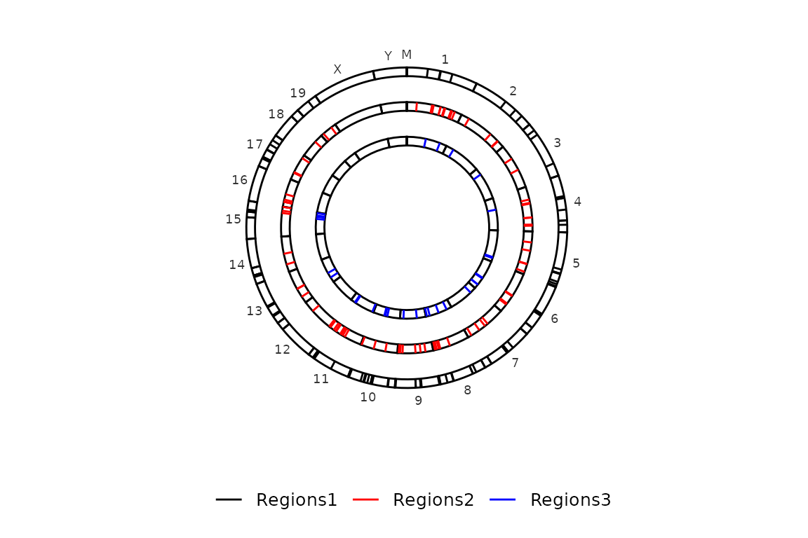
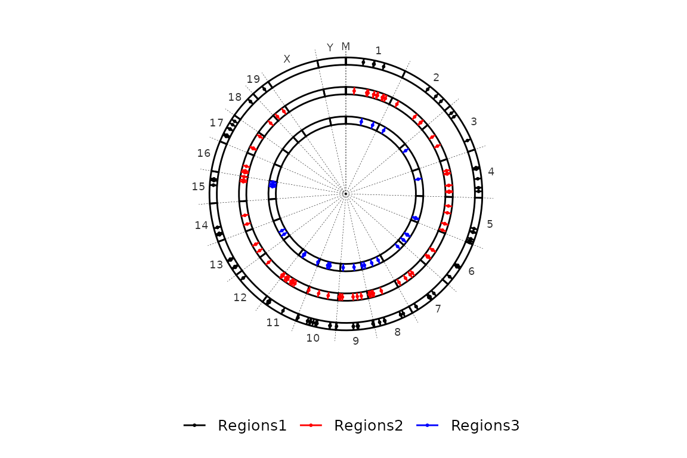
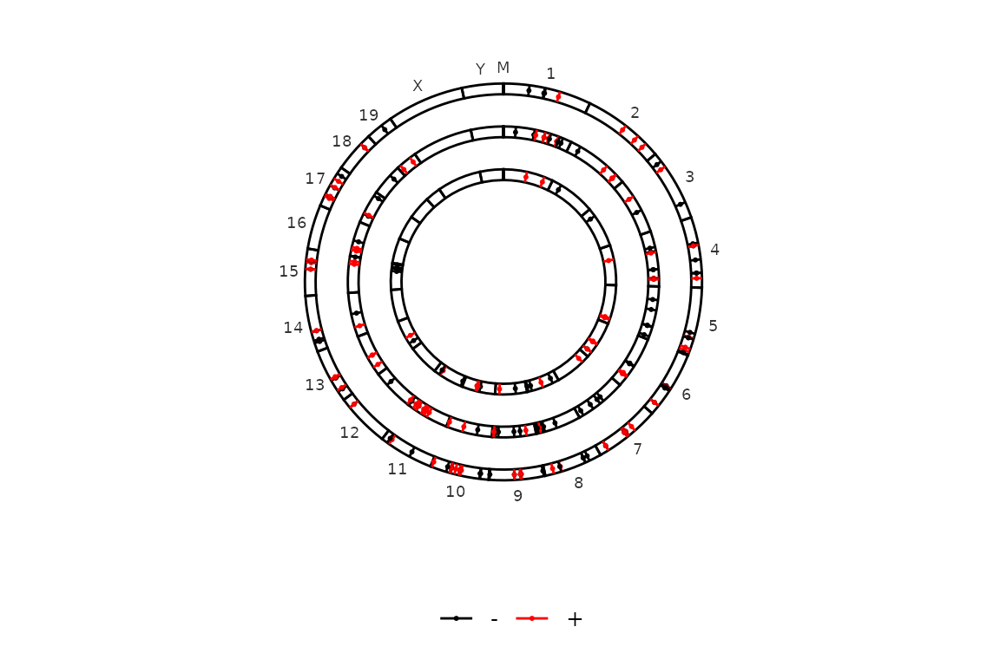
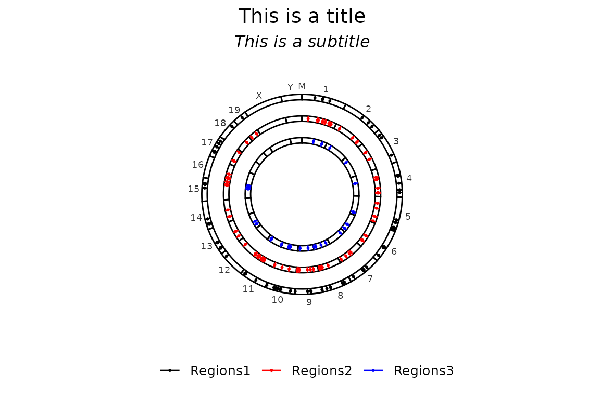
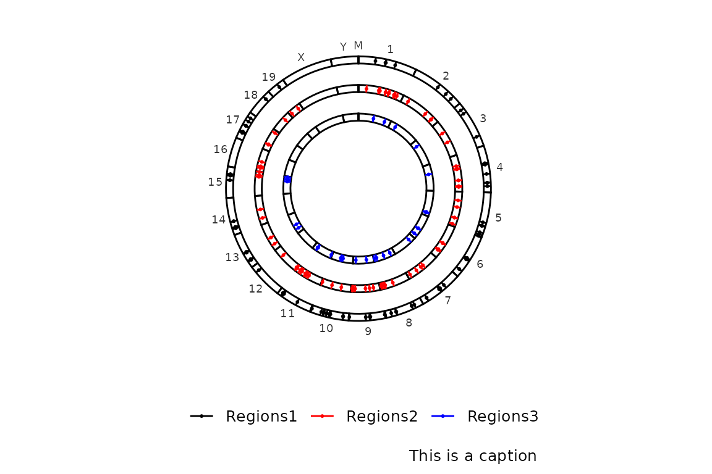
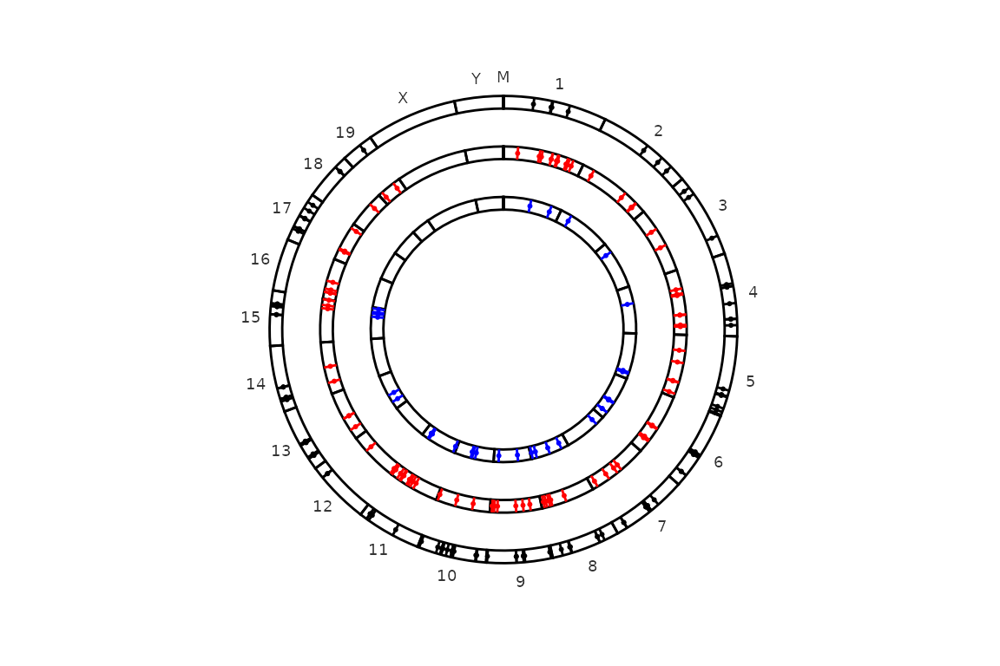

Last updated: 2022-02-14
Run circleRegions()
chromRegions() takes a file with the sizes of the chromosomes and draws a ggplot2-based bar plot. Then takes a list of regions in a BED-like format to draw them into each chromosome. The inputs chrom.sizes and regions can be supplied as a list of character with path to the file where the information is stored or a list of data frame.
Required input
The crhom_sizes input is:
chromsizes_sets <- list("Regions1" = "../testdata/mm10.chrom.sizes",
"Regions2" = "../testdata/mm10.chrom.sizes",
"Regions3" = "../testdata/mm10.chrom.sizes")
chromsizes_sets[[1]] %>% read.delim(header = F) %>% head()## V1 V2
## 1 1 195471971
## 2 10 130694993
## 3 11 122082543
## 4 12 120129022
## 5 13 120421639
## 6 14 124902244The regions_sets is a list of characters or dataframes. It can have as many elements as wanted and it has the following structure:
regions_sets <- list("Regions1" = "../testdata/mm10.regions.tsv",
"Regions2" = "../testdata/mm10.regions2.tsv",
"Regions3" = "../testdata/mm10.regions3.tsv")
regions_sets[[1]] %>% read.delim(header = F) %>% head()## V1 V2 V3 V4 V5 V6
## 1 1 57348975 57377520 region2 28545 -
## 2 1 91403055 91406029 region4 2974 -
## 3 1 92992344 92997067 region6 4723 -
## 4 1 125174891 125177979 region10 3088 +
## 5 10 18796805 18831930 region18 35125 -
## 6 10 20310505 20312760 region19 2255 -Default run
The default run requires only the chromsizes_sets and the regions_sets arguments, either as a lists of paths to a file or a list of data frames. Both, the chromsizes_sets and the regions_sets arguments, must have the same length and the same order, ii.e. if the regions are from different species, the chromosome sizes must be from the corresponding species in the same order.
If you provide a list with 1 element, only one circle will be drawn. If the list contains three elements, three circles will be drawn.
Here we have a list of 1 element as input.
circleRegions(chromsizes_sets = chromsizes_sets[1], regions_sets = regions_sets[1], color_by = "region")And here, a list of three elements as input:
circleRegions(chromsizes_sets = chromsizes_sets, regions_sets = regions_sets)
Also from a list of data frames:
# Read the data
chromsizes = chromsizes_sets %>% purrr::map(~read.delim(.x, header = F))
regions = regions_sets %>% purrr::map(~read.delim(.x, header = F))
circleRegions(chromsizes_sets = chromsizes, regions_sets = regions)
Exclude chromosomes
Very often, the genome assemblies of a lot of species have chromosomes/scaffolds with strange names, which are not nice to plot. These can be excluded using the chr_exlude argument with a vector of regular expressions that match the chromosomes to exclude. By default chr_exclude removes the most usuall strange chromosomes, but if you want to remove more chromosomes or don’t want to remove any, you can change the chr_exclude argument.
An example that excludes all the chromosomes that contain a dot in the name:
circleRegions(chromsizes_sets = chromsizes_sets, regions_sets = regions_sets, color_by = "region", chr_exclude = "\\.") ## Paired regions
## Paired regions
Imagine we have, for each element regions_set, regions that are paired (i.e. have the same id (4th column) in different elements) and we want to connect them. We can do this by setting the paired argument to TRUE, which will cause the function to draw a line connecting the paired regions. The color of the line can be controlled with paired_color, which is "Blue" by default..
# Read the data
chromsizes = chromsizes_sets %>% purrr::map(~read.delim(.x, header = F))
regions = regions_sets %>% purrr::map(~read.delim(.x, header = F))
# Subset one of the regions and enter it as element of regions_sets
regions[[2]] <- regions[[1]][sample(1:100, 20, replace = F),]
regions[[3]] <- regions[[1]][sample(1:100, 20, replace = F),]
circleRegions(chromsizes_sets = chromsizes,
regions_sets = regions,
paired = T, paired_color = "Darkblue")
Customization
Draw the points
By default, circleRegions() draws a line/rectangle and a point in the middle of each region. To avoid drawing the points, the argument draw_points can be set to FALSE.
circleRegions(chromsizes_sets = chromsizes_sets, regions_sets = regions_sets, draw_points = F)
Chromosome labels
By default, if all the elements in chromsizes_sets are equal, circleRegions() only draws the labels of the chromosomes in the outer side of the most external circle. However, if they are not equal (i.e. different file names or different information in the dataframe (only between first and second elements)), they are plotted in all the circles. The color of the labels can be controlled with chr_label, which is "Black" by default.
chromsizes_sets2 <- list("Regions1" = "../testdata/mm10.chrom.sizes",
"Regions2" = "../testdata/mm10.chrom.sizes2")
circleRegions(chromsizes_sets = chromsizes_sets2, regions_sets = regions_sets[1:2], chr_label = "Red")Chromosome lines
By default, circleRegions() does not plot any lines to separate the chromosomes. This can be reversed by setting chr_line to TRUE.
circleRegions(chromsizes_sets = chromsizes_sets, regions_sets = regions_sets, chr_line = T)
Color
By default, the regions are colored by region (i.e. each element in regions_sets). This can be controlled with the colors argument, which accepts a character vector with valid color names and the same length as regions_sets
circleRegions(chromsizes_sets = chromsizes_sets, regions_sets = regions_sets, color_by = "region")If you want to color by strand, just turn color_by to "strand".
circleRegions(chromsizes_sets = chromsizes_sets, regions_sets = regions_sets, color_by = "strand")
Now, imagine that we have regions that do not have a defined strand (e.g. most ChIP-seq peaks). In this case, the col_by_strand is internally converted to FALSE and the regions are colored by region set (i.e. elements in regions_sets). Look at this example with only one region set whose strand values are converted to “.”.
# Read and format regions file to have strand as "."
regions_no_strand <- read.delim("../testdata/mm10.regions.tsv", header = F) %>% dplyr::mutate(V6 = ".")
# Draw the plot
circleRegions(chromsizes_sets = chromsizes_sets,
regions_sets = list(regions_no_strand, regions_no_strand, regions_no_strand),
sets_names = c(paste("Regions", 1:3)), # set colnames because they are mandatory.
color_by = "strand")If extra_info is added, color_by can be set to "extra", which will cause circleRegions to be coloured by the added information. extra_info must be a list of files or data frames with the id of the regions in region_sets (4th column) and an extra column with the (discrete) information you want to use to colour the regions.
This is how a file/data frame within extra_info should look like.
# Read and format regions files
extra <- purrr::map(regions_sets, read.delim, header = FALSE) %>%
purrr::set_names(nm = c("extra1", "2extra", "3")) %>% # this is to set the names of the extra info, which will be used as "extra" column
purrr::map(~dplyr::select(.x, "id" = V4)) %>%
purrr::imap(~dplyr::mutate(.x, extra = .y))
head(extra[[1]])## id extra
## 1 region2 extra1
## 2 region4 extra1
## 3 region6 extra1
## 4 region10 extra1
## 5 region18 extra1
## 6 region19 extra1And this is how the plot looks like.
# Draw the plot
circleRegions(chromsizes_sets = chromsizes_sets[1:3],
regions_sets = regions_sets,
sets_names = c(paste("Regions", 1:3)), # set colnames because they are mandatory.
extra_info = extra,
color_by = "extra")Titles
Title and subtitle can be supplied through the arguments title and subtitle, respectively. By default, they are set to NULL, but can accept a character of length 1.
circleRegions(chromsizes_sets = chromsizes_sets,
regions_sets = regions_sets,
title = "This is a title",
subtitle = "This is a subtitle")
Finally, a caption can be included in the bottom-right corner by setting the caption argument. By default, caption is set to NULL and it can be set to TRUE or any character. If caption is set to a character, whatever is written will be placed in the bottom-right corner. Instead, if it is set to TRUE, what will be written will be the number of regions in the input region sets.
Here there is an example with any character:
circleRegions(chromsizes_sets = chromsizes_sets,
regions_sets = regions_sets,
caption = "This is a caption")
On the other hand, if caption is set to TRUE, the caption will show the number of regions in the input regions set (regions_sets).
circleRegions(chromsizes_sets = chromsizes_sets,
regions_sets = regions_sets,
caption = TRUE)Legend
The position of the legend is, by default, the bottom of the plot. This can be changed by changing the legend argument to one of “bottom”, “right”, “top”, “left” or “none” (no legend). The legend argument is passed through ggpubr::theme_pubr().
circleRegions(chromsizes_sets = chromsizes_sets,
regions_sets = regions_sets,
legend = "top")
circleRegions(chromsizes_sets = chromsizes_sets,
regions_sets = regions_sets,
legend = "none")
Further costumization
Since chromRegions() outputs a ggplot2-based bar plot, it can be further customized like any other ggplot2-based plot.